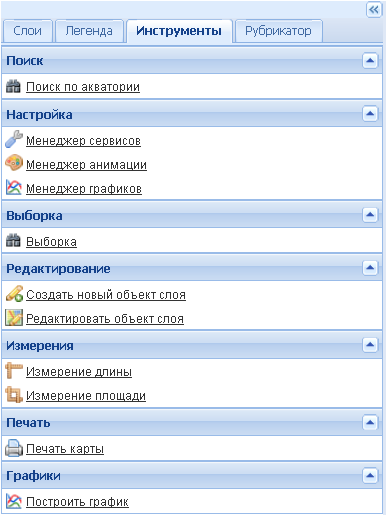
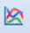
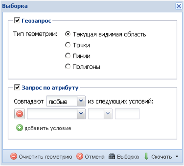
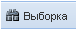
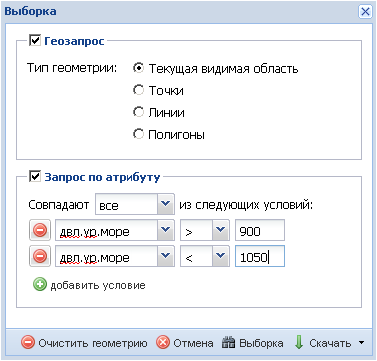
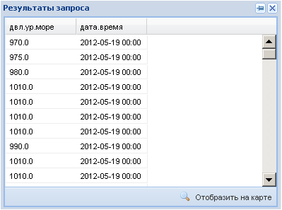
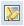
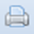

Инструменты
Закладка Инструменты служит для работы с пространственными данными и имеет семь полей – Поиск, Настройка, Выборка, Редактирование, Измерения, Печать и Графики.

Поле Поиск.
Инструмент Поиск по акватории служит для поиска на карте необходимой акватории и быстрого перехода к ней. При выборе данной команды появляется поисковое окно Выбор акватории, в котором предлагается из ниспадающего списка выбрать требуемую акваторию.

Посла нажатия кнопки Перейти видимая область карты переместится в заданное место.
Поле Настройка.
Инструмент Менеджер сервисов позволяет управлять сервисами – подключать имеющиеся, менять названия и добавлять новые для дальнейшей многократной работы с ними.
При выборе этого инструмента появляется дополнительное окно Менеджер сервисов, в котором находятся параметры настройки сервисов типа WMS, ArcGIS и специальных слоев RSS, для каждого из которых имеются свои закладки.
В окне для WMS-сервисов расположены окошко со списком предустановленных сервисов, окошки для добавления новых сервисов, окошко со списком слоев выбранного сервиса и кнопки управления.
Для добавления предустановленного сервиса нужно выбрать его из списка имеющихся сервисов (при этом в окошках добавления появятся реквизиты) и нажать кнопку Подключить. В окошке списка слоев появятся заголовки всех слоев выбранного сервиса, а над кнопкой Подключить отобразится их общее число. Отметив курсором нужный слой, надо нажать на кнопку Добавить на карту и он появятся в рабочем окне карты и в списке слоев на боковой панели задач.

Для добавления нового сервиса необходимо ввести его URL-адрес, (опционно- добавить REST URL), дать наименование, под которым он будет использоваться в дальнейших сеансах работы и нажать кнопку Сохранить. Сервис появится в конце спика предустановленных сервисов.
Кнопка Новый "очищает" окошки добавления от предыдущих записей, кнопка Удалить удаляет засвеченный в списке сервис и "очищает" окошки добавления, кнопка Закрыть закрывает дополнительное окно.
Окна для ArcGIS-сервисов и для специальных слоев RSS имеют схожую структуру и кнопки управления с окном для WMS-сервисов, только в окошках добавления кроме наименования и адреса следует вводить формат (для ArcGIS) и выбрать иконку (для слоев RSS).

Инструмент Менеджер анимации служит для создания и настройки стэка анимационных слоев. При активации инструмента появляется дополнительное окно Менеджер анимации, в котором имеются колонки с названиями уже существующих стэков, их URL-адресами и инструментами редактирования/удаления стэков. Для создания нового стэка существует опция Добавить.

При ее активации появляется дополнитекльное окно Настройка анимации, в котором пользователь должен присвоить имя создаваемому стэку
и добавить сервис, из которого будут выбираться слои для анимации. Добавление сервиса осуществляется кнопкой Добавить сервис (см. Слой-Добавить). Все слои выбранного сервиса будут загружены в окошко Доступные слои.
Из этих слоев пользователь может выбрать те, которые нужные для анимации, нажав на пиктограмму  в колонке Действия. Отмеченные слои появятся в правом окошке Выбранные слои.
в колонке Действия. Отмеченные слои появятся в правом окошке Выбранные слои.

Последовательность выбранных слоев в списке будет соответствовать их последовательности при анимации. Если требуется изменить эту последовательность, нужно воспользоваться инструментом  в колонке Действия, позволяющим перемещать нужный слой вверх или вниз по списку.
Пиктограмма
в колонке Действия, позволяющим перемещать нужный слой вверх или вниз по списку.
Пиктограмма  удаляет ненужный слой из списка анимации. Цифровые значения в колонке Подпись соответствуют цифровой шкале в окне управления анимацией (см. Папка Анимация).
удаляет ненужный слой из списка анимации. Цифровые значения в колонке Подпись соответствуют цифровой шкале в окне управления анимацией (см. Папка Анимация).

После завершения всех настроек и нажатия кнопки Готово Приложение сформирует стэк анимации, выдаст уведомление об этом
и внесет его название в список стэков в окне Менеджер анимации. Созданный стэк теперь доступен для добавления из списка анимации (см. Слой-Добавить).
Пиктограмма  в колонке Действия позволяет редактировать стэки анимации. При нажатии на нее раскроется дополнительное окно Настройка анимации, аналогичное описанному выше.
Пиктограмма удаляет ненужный стэк анимации.
в колонке Действия позволяет редактировать стэки анимации. При нажатии на нее раскроется дополнительное окно Настройка анимации, аналогичное описанному выше.
Пиктограмма удаляет ненужный стэк анимации.
Инструмент Менеджер графиков служит для подготовки шаблона графика с целью его дальнейшего применения в конкретной точке карты. При выборе этого инструмента появляется дополнительное окно Менеджер графиков, в котором имеются колонки с названиями уже существующих шаблонов графиков, их URL-адресами, отметками о назначении графика для текущего использования и с инструментами редактирования/удаления шаблонов. Для создания нового шаблона графика существует опция Добавить.

При ее активации появляется дополнитекльное окно Настройка графика, в котором пользователь должен присвоить имя создаваемому шаблону и добавить сервис, из которого будут выбираться слои для графика. Добавление сервиса осуществляется кнопкой Добавить сервис (см. Слой-Добавить). Все слои выбранного сервиса будут загружены в окошко Доступные слои. Из этих слоев пользователь может выбрать те, которые нужные для шаблона графика, нажав на пиктограмму в колонке Действия. Отмеченные слои появятся в правом окошке Выбранные слои.

Последовательность выбранных слоев в списке будет соответствовать их последовательности на графике. Если требуется изменить эту последовательность, нужно воспользоваться инструментом в колонке Действия, позволяющим перемещать нужный слой вверх или вниз по списку.
Пиктограмма удаляет ненужный слой из списка.
Для завершения создания шаблона надо задать значения для осей X и Y, выбрав их из ниспадающего списка в соответствующих окошках.
После завершения всех настроек и нажатия кнопки Готово Приложение сформирует шаблон графика и выдаст уведомление об этом

Название созданного шаблона появится в списке шаблонов дополнительного окна Менеджер графиков.
Если пользователь хочет, чтобы данный шаблон использовался для построения графика при пользовании кнопкой управленя  или инструментом Построить график (см.ниже), он должен отметить его галочкой в колонке Использовать по умолчанию.
Поле Выборка.
Инструмент Выборка позволяет осуществлять выбор объектов по запросу пользователя и применим к векторным слоям (точки и изолинии). Для пользования данной командой нужно отобразить необходимый слой в рабочем окне и сделать его активным. По команде раскрывается дополнительное окно Выборка, имеющее две опции – Геозапрос и Запрос по атрибуту.

Опция Геозапрос используется для выборки объектов слоя геометрическими фигурами – точками, линиями или полигонами. Отметив галочкой необходимую геометрическую фигуру, ее нужно нанести в заданном районе карты и нажать кнопку . Появится дополнительное окно Результаты запроса, в котором будут приведены все объекты, попавшие в границы выбранной геометрической фигуры, с их атрибутивными характеристиками. С помощью команды Отобразить на карте в правом нижнем углу дополнительного окна можно подсветить все объекты, попавшие в выборку.

Если в Типе геометрии отметить галочкой Текущая видимая область, то в окне Результаты запроса будут приведены все объекты рабочего окна карты.
Опция Запрос по атрибуту дает возможность выбрать объект по его атрибутивной информации и используется для задания параметров включения объектов слоя в данную выборку. Для этого в ниспадающем списке окошка выбирается атрибутивное поле, по которому вводится ограничение, в смежном окошке выбирается тип оператора, в следующем – вводится значение.

Если одного условия для задания параметров не достаточно, можно добавить их необходимое количество с помощью опции Добавить условие.

Закончив задание параметров для запроса, необходимо нажать кнопку . В появившемся дополнительном окне Результаты запроса будут перечислены все объекты слоя, удовлетворяющие заданным условиям запроса.

При желании их можно «подсветить» на карте, нажав кнопку Отобразить на карте.

Поле Редактирование.
Инструмент Создать новый объект слоя используется для добавления нового объекта в редактируемом слое. Аналогичен кнопке  на панели редактирования панели главного меню.
на панели редактирования панели главного меню.
Инструмент Редактировать объект слоя используется для изменения существующего объекта в редактируемом слое. Аналогичен кнопке  на панели редактирования панели главного меню.
Поле Измерения.
Инструменты Измерение длины и Измерение площади аналогичны действиям кнопки управления  на панели главного меню.
на панели главного меню.
Поле Печать.
Инструмент Печать карты служит для печати в файл проекта пользователя. Аналогичен действию кнопки управления  на панели главного меню.
Поле Графики.
Инструмент Построить график предназначен для построения графиков с демонстрацией изменений показателей в указанной пользователем точке. Аналогичен действию кнопки управления на панели главного меню.